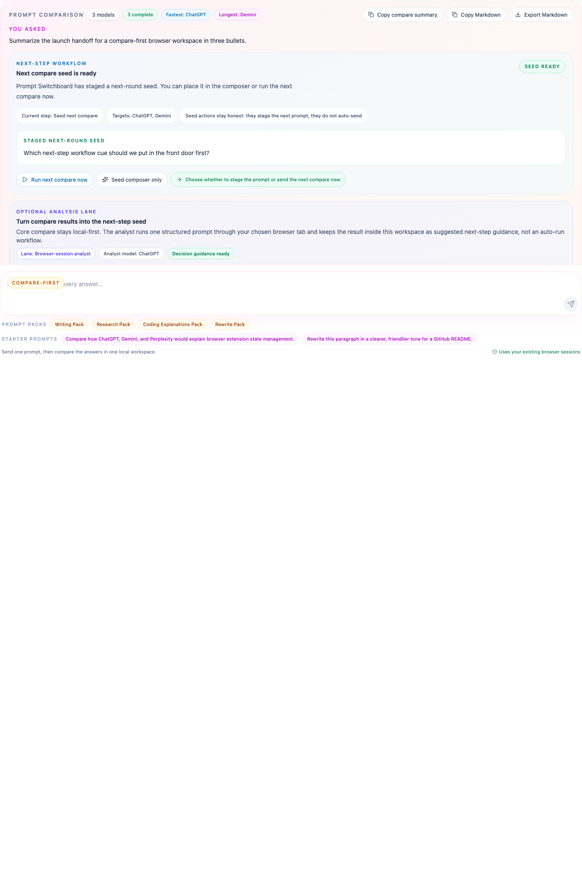

Compare coding explanations in one browser workspace instead of asking the same question in every tab.
Prompt Switchboard is useful here because coding explanations usually differ in framing, trade-offs, and maintainer readability. That is easier to judge when the answers are aligned in one compare board.
Best questions for this page
Explain why this test harness failed
Compare two implementation strategies for the same bug
Summarize a repo or architecture for a new maintainer
Best Prompt Switchboard moves
Start from the Coding Explanations Pack
Use the run timeline to see whether a failure was blocked in readiness or during prompt execution
Prepare the next compare seed from the strongest answer instead of rewriting context from scratch
What changes for coding explanations
When one model is concise, another is cautious, and a third is better at trade-offs, you need all three on the table at once. Prompt Switchboard turns that into one compare run instead of a memory game across tabs.

The run timeline and per-model diagnostics matter here because coding workflows often need to separate “the tab was not ready” from “the explanation itself was weak.”
Before you try this workflow
Open the coding-oriented chat tabs you already trust in the same browser profile.
Use one focused technical question per compare run so differences stay legible.
Prefer prompts that ask for reasoning, trade-offs, or maintainer-facing explanation quality.
Starter coding prompt
Explain why this browser-extension test harness might fail intermittently.
Compare the likely root causes, the first debug step, and the safest fix if the selector surface drifted.
What to open next
Prompt packs
Start from the Coding Explanations Pack when you want a prompt that already frames trade-offs and debugging clearly.